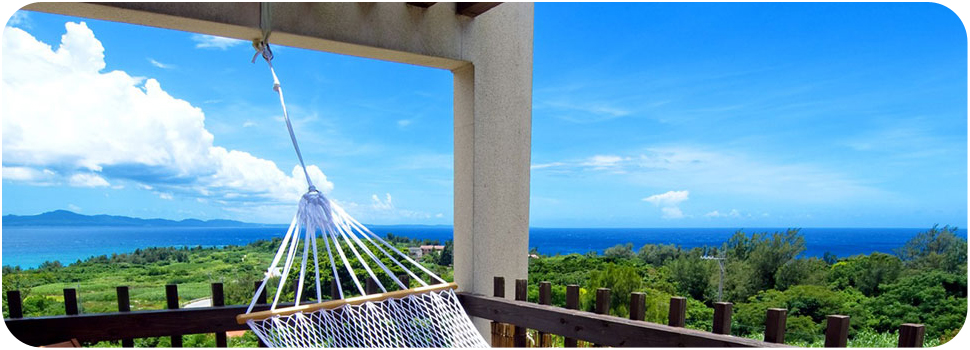

Tourism
This Week's Top 10
- 1.Pondicherry
- 2.Mahabalipuram
- 3.Kancheepuram
- 4.Thiruchirapalli
- 5.Madurai
- 6.Kodaikanal
- 7.Kanniyakumari
- 8.Goa
- 9.Rameshwaram
- 10.Alappuzha
-
Tiruchirapalli
Tiruchirappalli, universally known as Trichy, is a sprawling but extremely enjoyable city with two extraordinary temples - one perched high above the town on a rocky mount - and many travellers find Trichy more enjoyable than the clamour of the more renowned Madurai. It's a well-serviced regional transport centre, always busy with locals especially during auspicious marriage seasons when gorgeously clothed families abound in every hotel.
-
Our Best Places
Mahabalipuram
This city was actually the 2nd capital of the Pallavas. It was originally named after the rude, cruel, and arrogant King Mahabali who was killed during a fierce battle by Lord Vishnu at that location. It was named by the people more out of gratitude that the heartless king was killed there than out of respect upon his death for his leadership. During the rule of the Pallavas, new styles of art and architecture were pioneered.
Karumarapatti
karumarapatti, a flourishing village lying on the upper reaches of the Arun, consists of brick, flint and peg-tiled period houses - some thatched, which is rare in West Sussex. Its 533 residents enjoy a village shop, two pubs, a church, working museum and a bird-watching area on the flood plain, all only an hour and 20 minutes away from London Victoria, from which there are regular train services.
Manalurpettai
If you are looking for Manalurpettai map, then this Google satellite map of Manalurpettai will give you the precise imaging that you need. Using Google satellite imaging of Manalurpettai, you can view entire streets or buildings in exact detail. This Manalurpettai printable, global, travel, fresh google satellite map are easy to use and set up in a practical way. All you need to do is to scroll through the region list or type in the place you which to see.
Poondi Mahan
Poondi is a city in the State of Andhra Pradesh with a population of approximately 22,805. The closest tourism destination to Poondi is Srikakulam. Other close by tourism destinations include Gopalpur, Berhampur and Taptapani. The nearest major railway station to Poondi is Srikakulam Road (CHE) which is at a distance of 37.7 kilometres. The nearest airport is at Vishakapatnam which is at a distance of 166 kilometres.